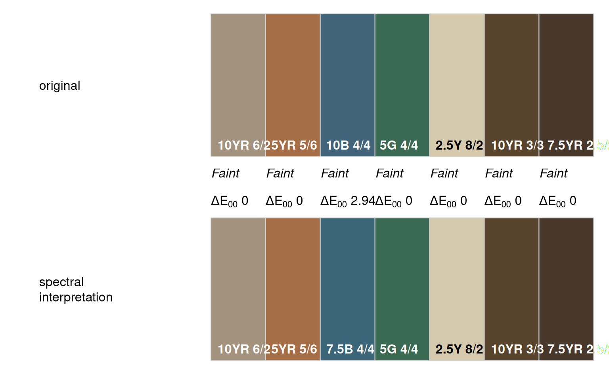

Convert reflectance spectra to closest Munsell chip
reflectance spectra, must range from 380nm to 730nm with resolution specified in res
spectra resolution in nm, typically 5nm or 10nm
logical, convert sRGB coordinates to closest Munsell chip (see ?munsell)
CIE standard observer: these are the color matching functions defined by CIE and used to represent "average" human color perception. CIE1931 is the 2 degree standard observer more useful for describing color perception over very small areas or at distance. CIE1964 is the 10 degree standard observer, used for most industrial color matching applications.
CIE standard illuminants:
D65 represents average daylight
F2 represents typical fluorescent lighting
further arguments to rgb2munsell()
output from rgb2munsell()
Marcus, R.T. (1998). The Measurement of Color. In K. Nassau (Ed.), Color for Science, Art, and Technology (pp. 32-96). North-Holland.
CIE Colorimetry – Part 1: CIE standard colorimetric observers. CIES014-1/E:2006 – ISO 11664-1:2007(E)
CIE. (n.d.). CIE 15:2004 Tables Data. Retrieved from https://law.resource.org/pub/us/cfr/ibr/003/cie.15.2004.tables.xls
# Munsell reference spectra
data("munsell.spectra.wide")
# convert to closest Munsell chip
# sRGB -> Munsell conversion via rgb2Munsell()
spec2Munsell(munsell.spectra.wide[, '10YR 3/3'])
#> hue value chroma sigma
#> 1 10YR 3 3 0.6428011
# attempt several
cols <- c('10YR 6/2', '5YR 5/6', '10B 4/4', '5G 4/4', '2.5Y 8/2', '10YR 3/3', '7.5YR 2.5/2')
# most are exact or very close
z <- do.call(
'rbind',
lapply(cols, function(i) {
spec2Munsell(munsell.spectra.wide[, i])
})
)
# format Munsell notation from pieces
z$m <- sprintf("%s %s/%s", z$hue, z$value, z$chroma)
# compare
colorContrastPlot(
m1 = cols,
m2 = z$m,
labels = c('original', 'spectral\ninterpretation')
)

if(requireNamespace("gower")) {
# mix colors, return spectra, convert to color
cols <- c('10YR 6/2', '5YR 5/6', '10B 4/4')
res <- mixMunsell(cols, keepMixedSpec = TRUE, mixingMethod = 'reference')
# note that they are slightly different
res$mixed
spec2Munsell(res$spec)
}
#> hue value chroma sigma
#> 1 10YR 5 1 1.670085